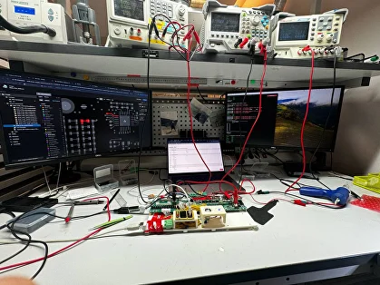
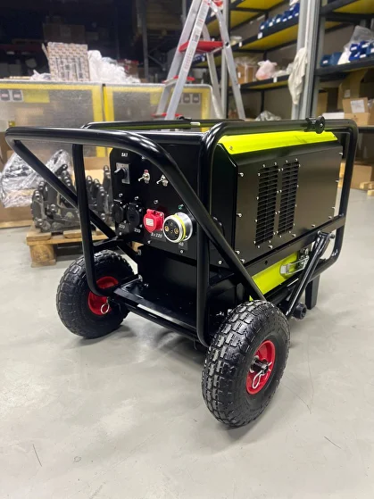

HardPy
is an
open source
python
package for creating
test benches
for devices


✨ Modified the way to use an image for widgets in the dialog box. Now users can add images to any widget using the ImageComponent.
✨ Introduced the capability to add image borders within the dialog box.
✨ Enhanced the user interface of the operator panel.